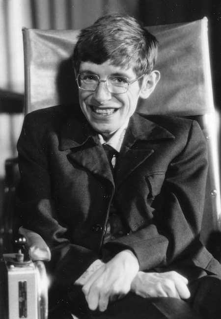

“Quiet People Have the Loudest Minds” ~ Stephen Hawking
Stephen William Hawking was an English theoretical physicist, cosmologist, and author who, at the time of his death, was director of research at the Centre for Theoretical Cosmology at the University of Cambridge. Between 1979 and 2009, he was the Lucasian Professor of Mathematics at the University of Cambridge, widely viewed as one of the most prestigious academic posts in the world.
Stephen Hawking was regarded as one of the most brilliant theoretical physicists in history. His work on the origins and structure of the universe, from the Big Bang to black holes, revolutionized the field, while his best-selling books have appealed to readers who may not have Hawking's scientific background. Hawking died on March 14, 2018, at the age of 76. Stephen Hawking was seen by many as the world's smartest person, though he never revealed his IQ score.
| Born | 8 January 1942 Oxford, England |

|
|
| Died | 14 March 2018 Cambridge, England |
||
| Education |
University College, Oxford (BA) Trinity Hall, Cambridge (PhD) |
||
| Known for |
Hawking radiation A Brief History of Time Penrose-Hawking theorems Black hole information paradox Micro black hole Primordial black hole Chronology protection conjecture Bekenstein-Hawking formula Hawking energy Hawking-Page phase transition |
||
| Awards | Adams Prize (1966) Eddington Medal (1975) Maxwell Medal and Prize (1976) Heineman Prize (1976) Hughes Medal (1976) Albert Einstein Award (1978) Albert Einstein Medal (1979) RAS Gold Medal (1985) Dirac Medal (1987) |
Wolf Prize (1988) Prince of Asturias Award (1989) Foreign Associate of the National Academy of Sciences (1992) Andrew Gemant Award (1998) Naylor Prize and Lectureship (1999) Lilienfeld Prize (1999) Albert Medal (1999) Copley Medal (2006) Presidential Medal of Freedom (2009) Breakthrough Prize in Fundamental Physics (2012) |
|
| 1942- Born January 8, in Oxford, England. This was the 300th anniversary the death of Galileo. |
| 1958- With help from his mathematics teacher Stephen built a computer from anything they could find. |
| 1959- At the age of 17 Stephen was awarded a scholorship to the University of Oxford |
| 1964- Stephen publicly challenged the work of noted astronomer Fred Hoyle |
| 1966- Obtained his PhD in Applied Mathematics and Theoretical Physics |
| 1968- A joint essay co-written with Roger Penrose was the runner-up at the Gravity Research Foundation competition. |
| 1970- Appointed to the Sherman Fairchild Distinguished visiting professorship at the California Institute of Technology (Caltech). |
| 1971- Stephens essay titled "Black Holes" won the Gravity research Foundation Award. |
| 1973- He began to study Quantum Gravity and Quantum Mechanics. |
| 1974- Elected a Fellow of the Royal Society. |
| 1975- Awarded the Eddington Medal |
| 1979- Awarded the Albert Einstein Medal. |
| 1982- Began writing "A Brief History of Time". |
| 1985- Lost his ability to speak after a tracheotomy was performed to save his life when he came ill with pneumonia. |
| 1986- Received a computer program called the "Equalizer" from Walter Wotosz, CEO of Words Plus. The Equalizer ran on an Apple II computer linked to a speech synthesizer. He could communicate approximately 15 words per minute using a hand clicker. |
| 1988- "A Brief History of Time" was published. |
| 1989- Received the Princec of Asturias Wards in Concord and made a Companion of Honour. |
| 1993- Recorded his synthesied voice for the song Keep Talking by Pink Floyd |
| 1998- "A Brief History of Time" was recorded in the Guinness Book of Records for being on The Sunday Times best-sellers list for 237 weeks. |
| 1999- Appeared on the The Simpsons. |
| 2001- Appeared on the documentary series The Real Stephen Hawking |
| 2002- Published "On The Shoulders of Giants". |
| 2005- "Information Loss in Black Holes" and "Black Holes and the Information Paradox" were published. |
| 2006- He posted an open question on the internet "In a world that is in chaos poitically, socially and environmentally, how can the human race sustain another 100 years?" |
| 2007- Courtesy of Zero Gravity Corporation Stephen participated in a zero-gravity flight. |
| 2009- June of this year Stephen held a party but didn't advertise it until it was over, obviously nobody showed up. This was his way of proving time-travelling to the past was not possible. |
| 2011- Narrating for the television series Curiosity on the Discovery Hawking stated: "We are each free to believe what we want and it is my view that the simplest explanation is there is no God. No one created the universe and no one directs our fate. This leads me to a profound realization. there is probably no heaven, adn no afterlife either. We have this one life to appreciate the grand design of the universe, and for that I am extremely grateful". |
| 2012- Conceeded he was wrong for saying the Higgs boson particle would never be found. |
| 2012- Appeared on the Big Bang Theory |
| 2014: His life is celebrated in the Oscar-winning biopic The Theory of Everything, based on the memoir Travelling to Infinity: My Life with Stephen, by Jane Hawking. |
| 2018: Dies on March 14 at the age of 76. |
If you have time, then you can read more infomation at Wikipedia